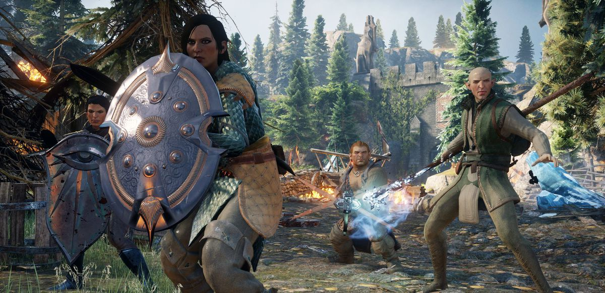
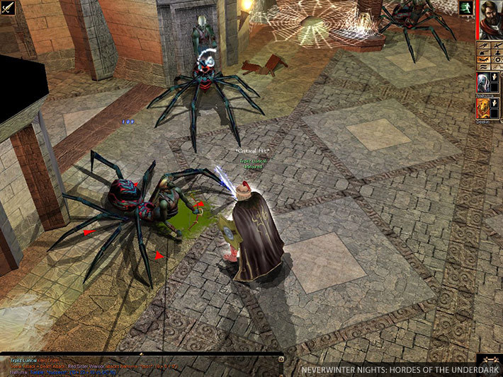
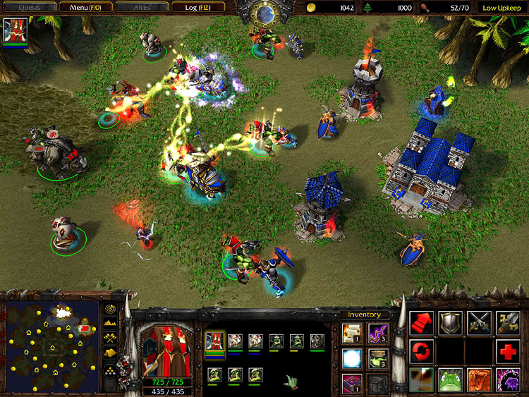
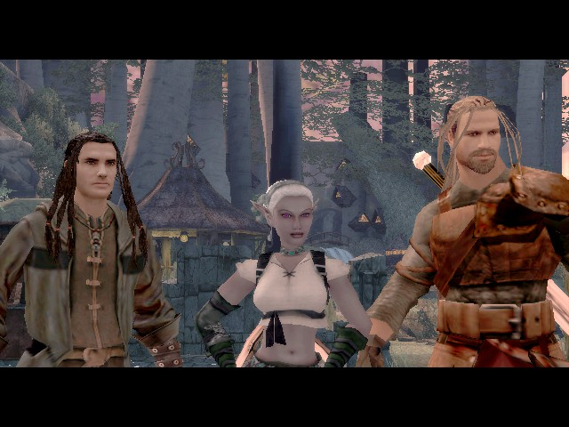
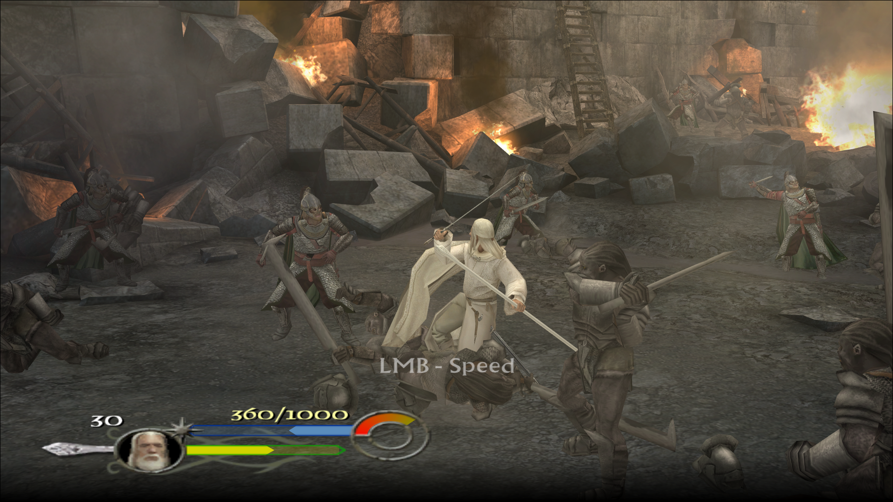

 The Dragon Age series is Bioware Studio's original IP in the fantasy genre. The games feature interactive dialogue which allow the player to shape the events of the game world.
 Neverwinter Nights gave players the ability to craft their own game worlds and quests and share it with the world. People are still developing content for this game 20 years later.
 Warcraft 3 was an ultra-polished real-time strategy game where players build bases and armies while harvesting resources. The cartoony/Disney-ish art style really makes an impression.
 Demonstone bankrupted the developer, but it was worth it. The soundtrack was amazing and the gameplay was simple but fun.
 Return of the King was a movie game done right. It featured voiceover work from the film's actors.